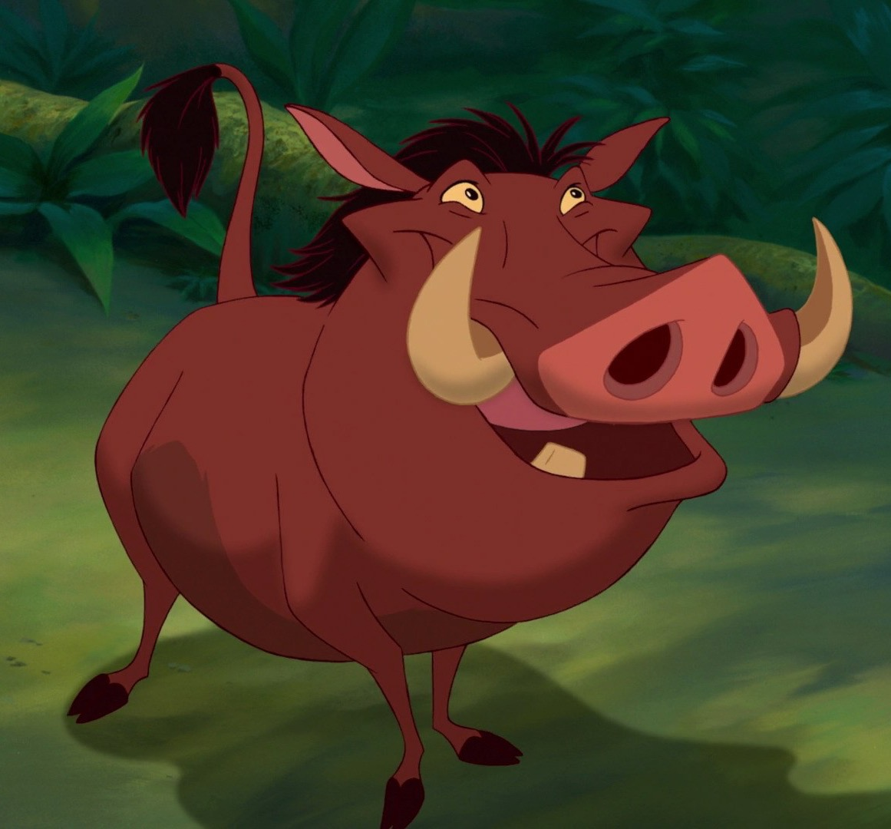
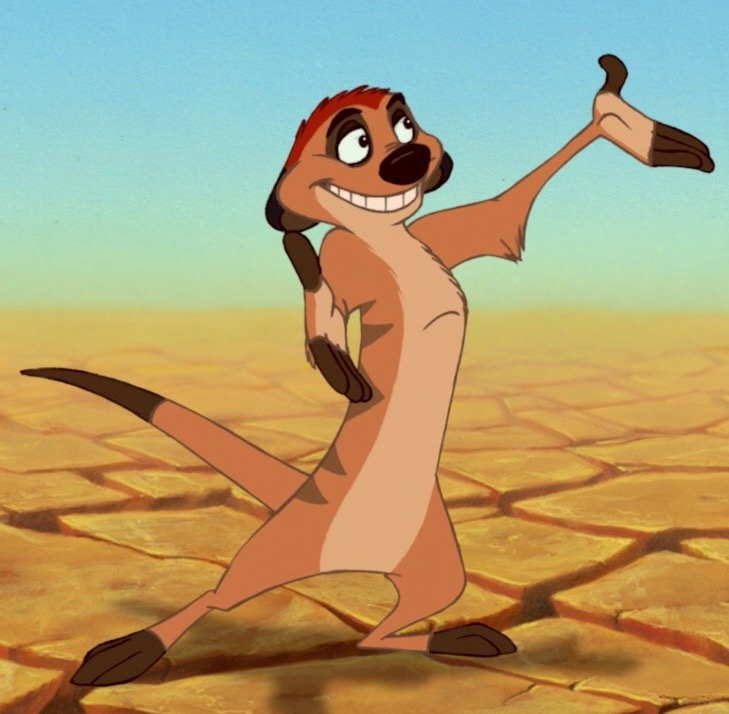

Species: warthog. Gender: male. He is the best friend of timon. And simba. When simba fled the Pride Lands. The three lived in the jungle together for many years. until Simba's childhood friend, Nala, found him and implored him to return to the Pride Lands. Timon and Pumbaa joined Simba in his quest to take back the throne. And were ultimately successful. He convinced timon into adopting bunga.
He nearly died from exposure in the desert. However, Timon and Pumbaa rescued him and revived him in their jungle home. They proceeded to teach Simba the Hakuna Matata lifestyle. And he adopted it readily. Becoming their close friend. There is little known about Pumbaa's history. Before the events that are shown in the film. However, before Timon and Pumbaa find the jungle. Pumbaa says that he is alone in the world. It is possible that he inadvertently lost contact with his family.
Species: Meerkat. Genrder:Male. He is the adoptive father and best friend of Simba. In the years following Simba's ascent to kingship. Timon and Pumbaa became frequent babysitters of his rambunctious daughter, Kiara. Timon is first seen riding on Pumbaa's back. Imagine that the lion king 2 aka The Lion King Hakuna Matata. Running among a flock of vultures to scatter them for fun. Pumbaa notices that the vultures have gathered around Simba's unconscious body. When Timon surveys Simba and realizes that he is a lion.
Additionally, they adopted a young honey badger. Named Bunga. who became friends with Simba's son. And his name is kion. He has once said "you gotta put your past behind you kid "(To Simba). To his horror he tells Pumbaa to flee. but Pumbaa insists that they remain and nurture the cub. but Pumbaa claims that this will not happen if they teach him to be on their side. Timon initially laughs at this idea. but then claims it as his own.
